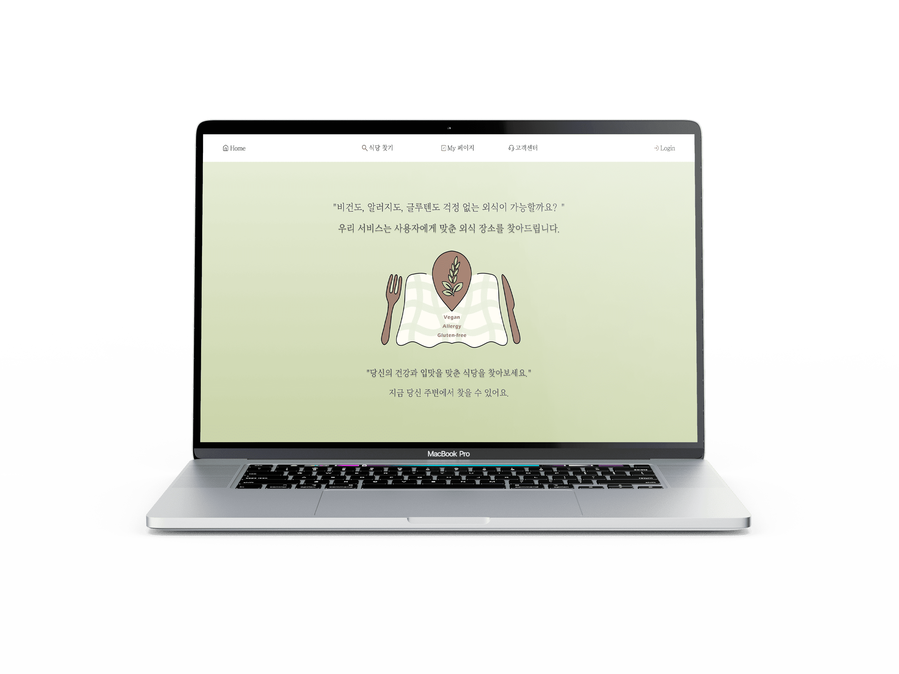
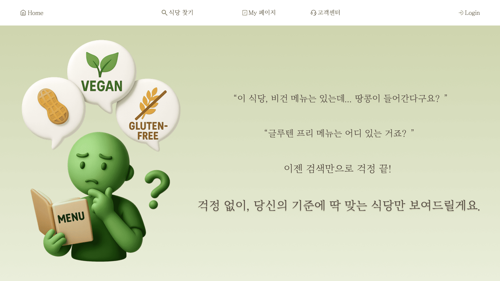
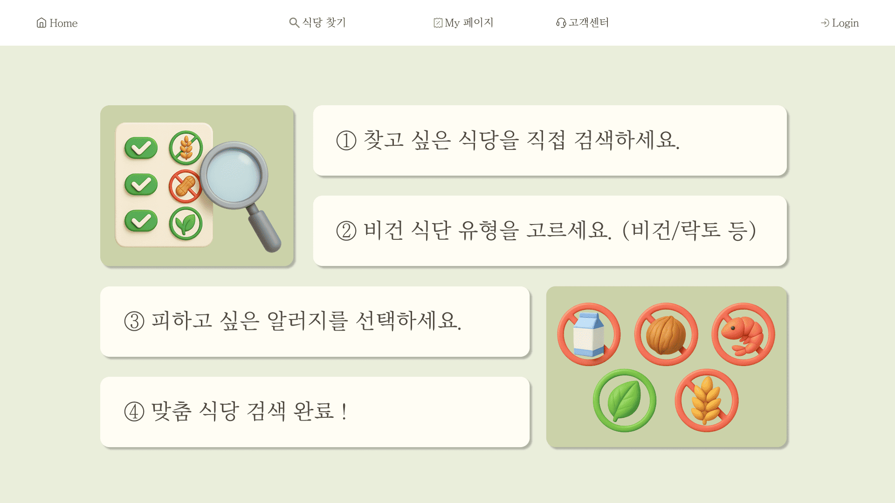
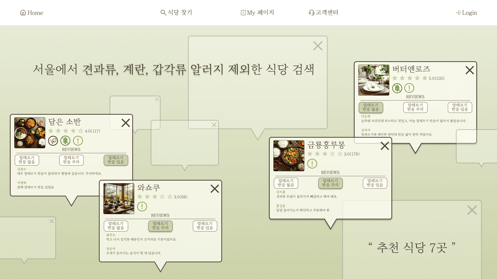
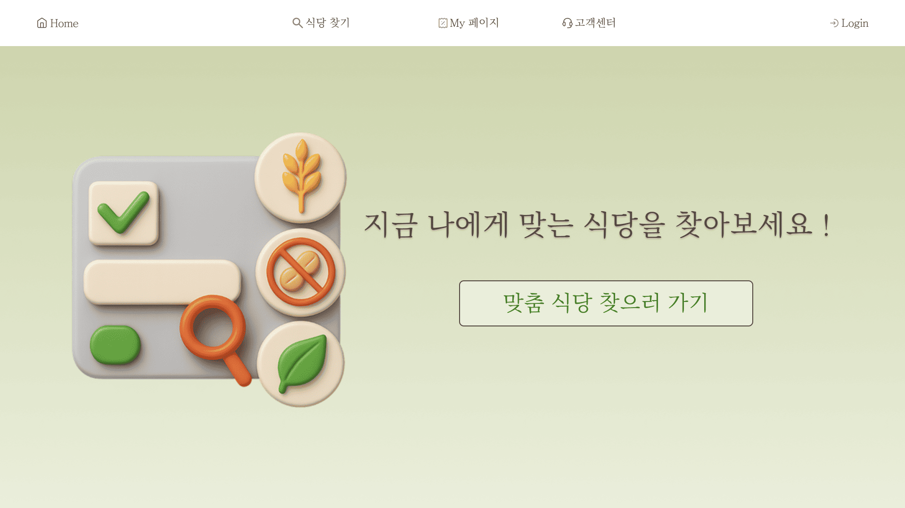
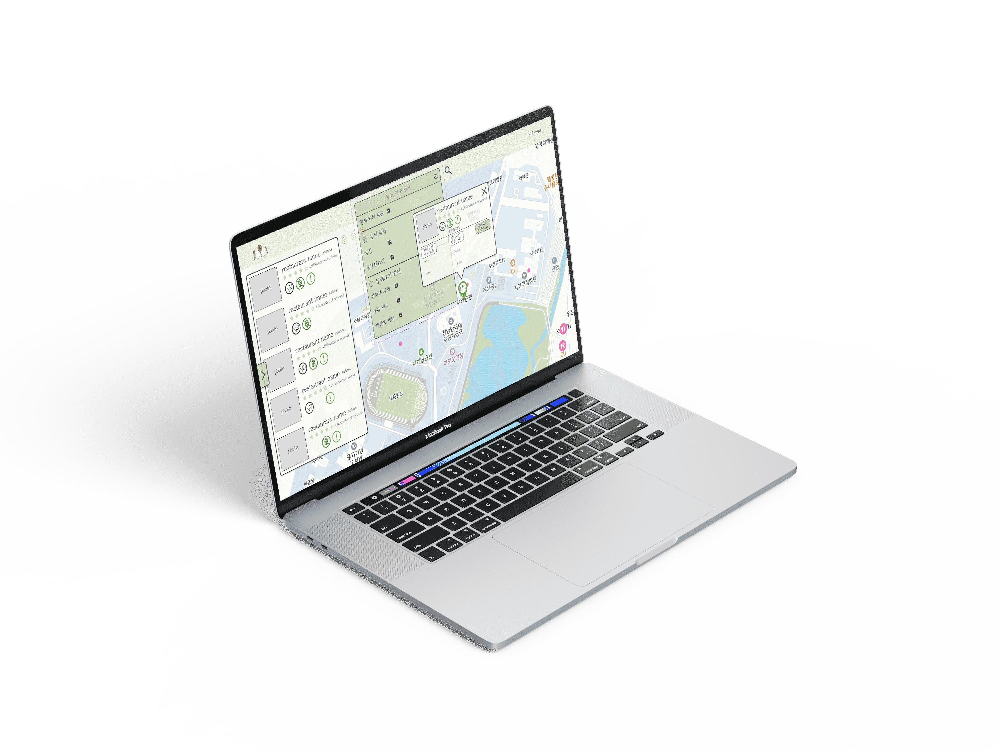
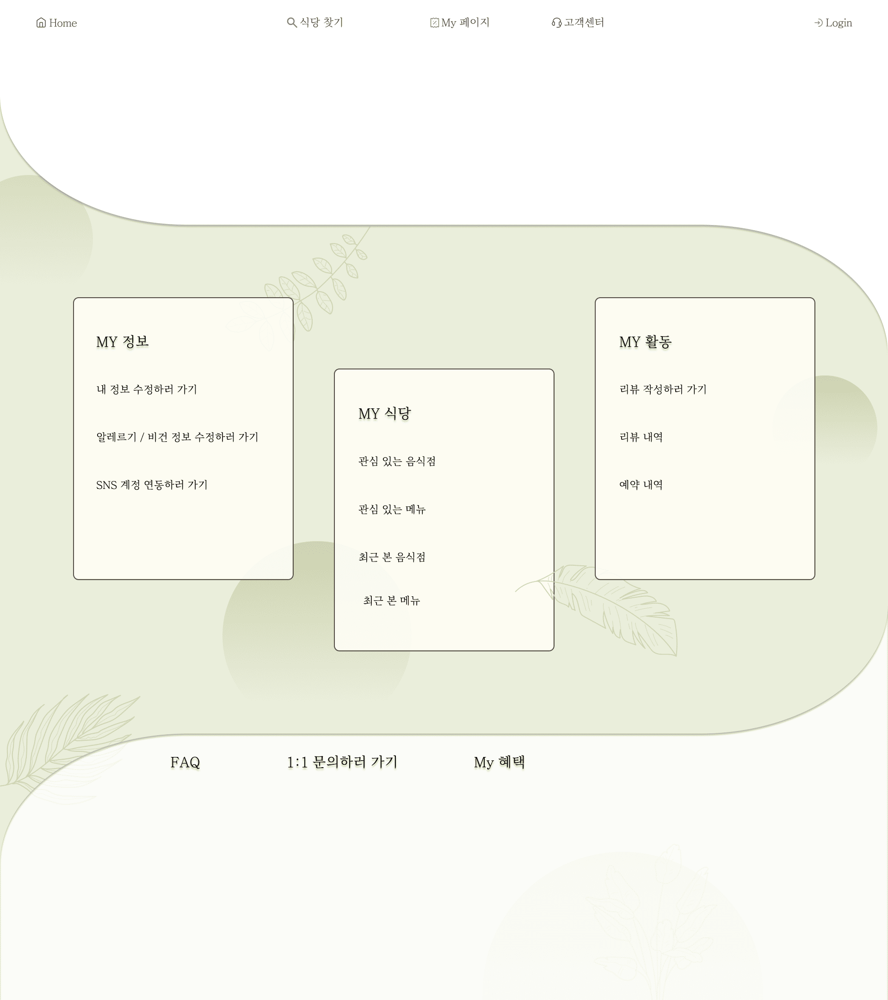
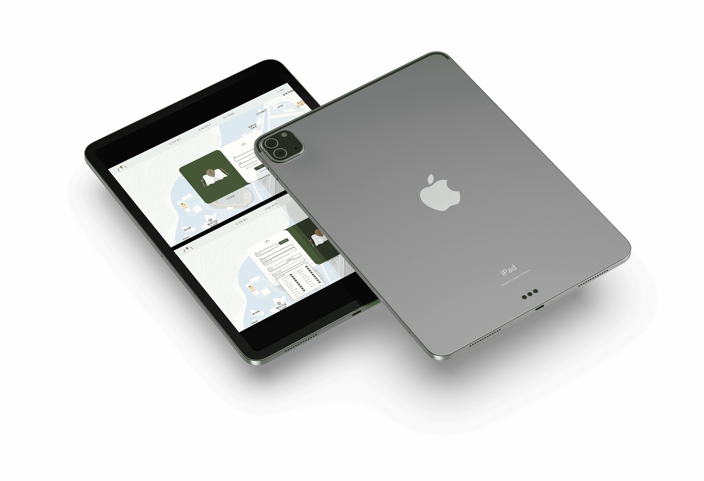

비건과 알러지 환자를 위한 맞춤형 식당 큐레이션 플랫폼
프로젝트 개요
비건 및 알러지 식단 이용자의 외식 접근성을 강화하기 위해
공공 데이터와 AI 필터링 기술을 활용한
맞춤형 식당 추천 및 지도 탐색 플랫폼을 개발하였습니다.

Progect Result
동상 수상
2025 한신 AI·SW 페스티벌
캡스톤디자인 부문
저작권 등록
비건과 알러지 환자를 위한
맞춤형 식당 큐레이션 플랫폼
논문 작성
비건 및 알러지 맞춤형
외식 플랫폼의 설계 및 구현
UX Process
문제 발견
비건 및 알러지 이용자의
외식 정보 탐색 불편 분석
사용자 조사
비건 유형 및 알러지 식단 관련
선행 연구 및 사용자 니즈 조사
데이터 구축
공공데이터 및 웹 크롤링 기반
식당 데이터 정제 및 분류
서비스 기획
맞춤형 필터링 및
지도 기반 탐색 기능 기획
UI · UX 디자인
사용자 중심 정보 구조 및
인터페이스 설계
발표 · 논문 작성
캡스톤 발표 자료 제작 및
졸업 논문 작성
My Role
아이디어 도출
100%서비스 기획
80%UI · UX 디자인
100%발표 자료 제작
100%프론트엔드 개발
20%
비건 및 알러지 이용자의 니즈를 분석하여 서비스 아이디어 도출, 기획, UI
· UX 디자인을 수행하였습니다. 또한 발표 자료 제작을
통해 프로젝트의 가치를 효과적으로 전달하였으며, 프론트엔드 개발에도
일부 참여하여 기획과 디자인의 구현 가능성을 함께 고려하였습니다.





주요 기능
지도 기반 검색
알레르기 성분 필터링
상세 정보 제공
비건 유형 필터링

기술 구성
